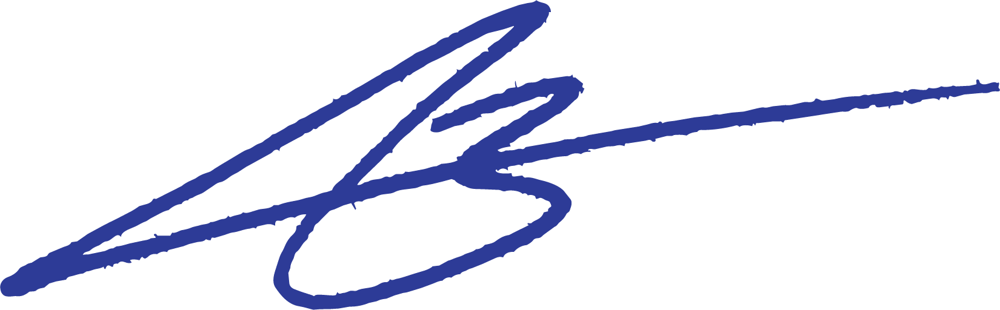

GRAFISCHE VORMGEVER | UX/UI
IK ONTWERP STRAKKE VISUALS
MET EEN DOEL EN IMPACT
LOCATION: GOUDA, NEDERLAND
Ik ben Anne, 24 jaar oud en geboren en getogen in Gouda. Creativiteit heeft altijd al in mij gezeten. Als kind was ik constant aan het tekenen, kleuren en dingen maken, zonder eigenlijk te weten dat je daar ook echt je werk van kon maken.
Toen ik 14 was liep ik een korte snuffelstage bij een kerstpakkettenbedrijf. Daar zei mijn stagebegeleidster dat ik, als ik hiermee door zou gaan, later best heel goed zou kunnen worden in dit vak. Die woorden zijn me altijd bijgebleven.
Nu, tien jaar later, weet ik dat ik mijn plek gevonden heb. Of ik nu bezig ben met grafisch ontwerp, UX/UI design of fotografie, ik haal nog elke dag plezier uit het creatieve proces en het maken van werk waar gevoel in zit.
